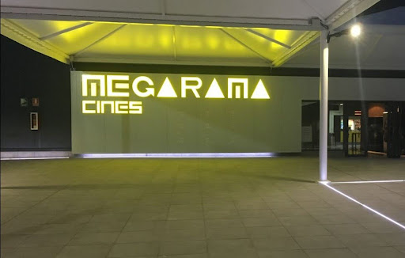
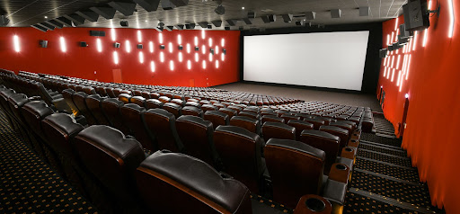

Cultura y ocio
El nuevo Neptuno reúne las mejores propuestas de entretenimiento de Granada bajo un mismo techo renovado.


Cine
Megarama Cines
El cine de referencia en Granada sigue en Neptuno. Megarama mantiene su oferta en el centro renovado, con la misma programación de siempre y las instalaciones mejoradas que todos conocen.
- 8 salas de proyección
- Sonido Dolby Digital
- Programación nacional e internacional
- Acceso directo desde el aparcamiento
Ocio activo
Arcade & Bolera
La gran novedad del nuevo Neptuno. Un espacio de ocio activo inspirado en las mejores propuestas de entretenimiento familiar, con bolera profesional y una zona arcade para todas las edades.
- Pistas de bolera profesional
- Zona de máquinas arcade
- Área de bar y restauración
- Reservas para grupos y eventos
Apertura prevista junto al nuevo Neptuno
Próximamente